6 Interpolation
6.1 Introduction
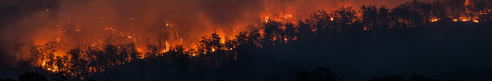
Aims
The aims of this practical are to:
- Introduce deterministic and geostatistical approaches for analysing spatial data.
- Understand how common spatial interpolation techniques work.
- Perform interpolation in ArcGIS and become familiar with common applications e.g., for prediction, as an input for spatial regression.
Application
To achieve this, we’ll apply interpolation techniques to UK temperature data from Met Office automatic monitoring stations, obtained via the Land Observations API. We’ll tackle a problem also faced by the Met Office - given limited meteorological observations, how do we predict the weather for unsampled locations?
Tools
Extract Values to Points (Spatial Analyst Tools), IDW (Geostatistical Analyst Tools), Empirical Bayesian Kriging (Geostatistical Analyst Tools), Geostatistical Wizard, Exploratory Interpolation (Geostatistical Analyst Tools)
6.2 Practical
6.2.1 Introduction
In the following introduction, I provide a rationale for interpolation, some background on spatial econometric and geostatistical approaches to spatial analysis, and discuss the practical data.
6.2.1.1 Why interpolate?
In the previous practical, we characterised the centrography, randomness and clustering of a point pattern, based on the understanding that the point locations and their overall distribution was a reflection of the relevant influencing factors and mechanisms. In short, the geography of the points was important, being a realisation of point processes.
In other circumstances, the distribution of points can be less meaningful. For example, the spatial arrangements of points may simply reflect how the data was collected, rather than being the result of the process we are interested in. In this case, the geography of the points is secondary, where the presence (and absence) of points is not a realisation of point processes, but a direct consequence of sampling strategy.
This matters because many geographic phenomena or processes are spatially continuous (e.g., temperature, elevation, air pollution), but our data collection is often limited to discrete sampling locations. In these circumstances, our interest lies less in the specific values measured at the sampling locations60, but in understanding and characterising the continuous nature of the phenomena. In turn, our aim is to move from a discrete to a continuous estimate of the phenomenon, which enables prediction of unknown values at new locations based on known measurements from surrounding sample points. This is spatial interpolation.
6.2.1.2 Econometrics and Geostatistics
This difference between discretised and continuous modelling of space is a reflection of two distinct but closely-related fields of spatial analysis: spatial econometrics and geostatistics. Both focus on analysis of spatial data and grapple with similar concepts (e.g., spatial structure, spatial dependence), but using very different tools and originating from different academic backgrounds and industries.
Much of this unit utilises spatial econometric methods, which are focused on analysis of discretised space (i.e., “areal data”), where continuous space is broken down into discrete zones (e.g., counties, countries), often represented by Polygons or Points. The spatial structure of these data is represented by the spatial weights matrix \(\mathbf{W}\) and spatially lagged variables, which underpin analysis of spatial autocorrelation using Moran’s \(I\) and \(I_{i}\) (Moran, 1948; Anselin, 1995b) and spatial correlation using Lee’s \(L\) (Lee, 2001). As we’ll discover in later weeks, \(\mathbf{W}\) is also a key component of both global (Anselin, 2002) and local spatial regression (Brunsdon et al., 1996a; Fotheringham et al., 2017a). Perhaps the most influential figure in the field of spatial econometrics is Luc Anselin, particularly since the publication of Spatial Econometrics: Methods and Models in 1988 (Anselin, 1988b). For an overview of the history of the field, I would recommend Anselin (2010) and Elhorst and Kesina (2026), but as a brief introduction, spatial econometrics arose from the field of econometrics61, with the recognition that “economic phenomena localized in a certain space must often be explained by causal factors in other spaces” (Paelinck, 1978) i.e., spatial dependence. In short, spatial econometric methods seek to account for the spatial dependence i.e., observations being related across space, and spatial heterogeneity i.e., observations or processes varying across space, that characterise spatial data, where the underlying observations are discrete spatial entities.
In contrast, the field of geostatistics focuses on processes operating over continuous space and developed from the work of Krige (1951a) and Matheron (1963a), which introduced new methods to estimate ore reserves in South African gold mines. Diggle and Ribeiro (2007) provides a useful summary of the geostatistical perspective, which focuses on phenomena which exist continuously throughout a region (e.g., air pollution). At every point within that region, there is a “true” air pollution value, but this is not directly observable. Instead, the researcher has access to a finite set of measurements \(Y_{1}, Y_{2}, \cdots, Y_{n}\) at locations \(X_{1}, X_{2}, \cdots, X_{n}\). Importantly, the values \(Y_{i}\) are not necessarily equal to the true underlying values, with uncertainty introduced by measurement error or noise. Under the conventional assumption that the sampling locations \(X_{i}\) are independent of the underlying spatial process, geostatistics seeks to model the unknown spatial pattern, accounting for spatial dependence and measurement error. This enables prediction at unsampled locations i.e., interpolation. Geostatistics therefore deals with the same geographic issues as spatial econometrics, such as spatial dependence (i.e., autocorrelation), but using alternative methods, such as semi-variograms, which we’ll introduce today.
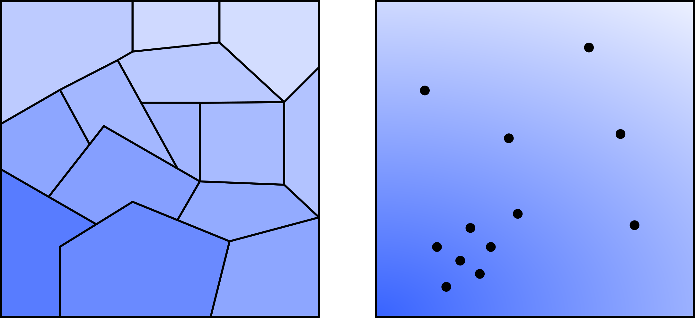
6.2.1.3 Data description
Spatial interpolation is a key component of geostatistics, and is used to predict unknown values at new locations based on known measurements from surrounding sample points. We could use our observations points of Panthera tigris from Practical 5 to demonstrate this, but it’s not an ideal example, for a few reasons:
Our points don’t have corresponding values that could be easily used for spatial interpolation e.g., animal height, age, or mass.
As demonstrated in Practical 5, the distribution of Panthera tigris observations is highly clustered and non-continuous, with observations primarily in designated nature reserves. Most interpolation techniques will struggle to capture this spatial pattern, and instead we’d probably want to use a species distribution model in this situation. You can learn about these in Spatial Ecology in Semester 2.
Our species observations are presence-only data (i.e., recorded observations of Panthera tigris), and we have no access to corresponding absence-data, which you can read about more fully in Grattarola et al. (2023) and Kent and Carmel (2011). As a result, we do not know whether the “gaps” in our point pattern reflect true absence, or simply sampling bias (Hughes et al., 2021).
As a final consideration, and linking back to the introductory discussion, one of the key assumptions in our analysis of Panthera tigris was that the observed point patterns were a reflection of point processes. Most traditional geostatistical approaches to interpolation, including those introduced today, assume (often implicitly) that the sampling approach (and by definition, the point pattern) is non-preferential i.e., sampling locations were not determined or influenced by the underlying process. This is unlikely to be the case for Panthera tigris, as sampling intensity and locations are likely influenced by the knowledge that tiger populations are higher in protected areas. While this is not a “deal breaker” for a geostatistical approach, it does require alternative methods (Diggle et al., 2010).
Instead, we are going to apply interpolation to a continuous entity that could be measured anywhere within our study area (air temperature), but which is represented by a finite number of discrete sampling locations (Met Office automatic monitoring stations).
6.2.2 Pre-processing
To begin:
Open ArcGIS, initialise a new project in the
practical-6directory, establish a connection todataand loadobservations-20260716_1400.csv, which includes air temperature measurements from 127 Met Office monitoring stations, with data from 2026-07-16 at 14:00:00. Use XY Table to Point (EPSG: 4326) and save to the project directory e.g.,met_office_temp.
As we are focused on the British Isles:
Project the resulting layer to the British National Grid (EPSG 27700), update the map CRS to match, and then investigate the dataset.
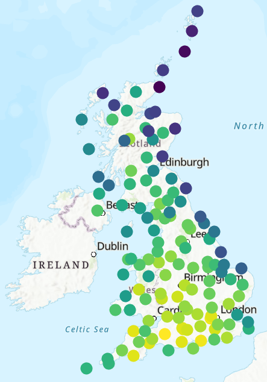
What was the average measured temperature (temp) for that datetime?
Does the monitoring station location (latitude, longitude) influence
the measured temperature?
Investigate spatial autocorrelation using Spatial Autocorrelation (Global Moran’s I) and Cluster and Outlier Analysis (Anselin Local Moran’s I), and review the Practical 2 materials for a refresher on constructing the spatial weights matrix for points.
Is there evidence of global spatial autocorrelation?
Is there evidence of positive local spatial autocorrelation (HH, LL) or negative local spatial autocorrelation (HL, LH)?
Following on from our analysis of point patterns:
How would you characterise the distribution of Met Office monitoring stations? e.g., Centrography and Randomness.
Before we can use our temperature data for spatial interpolation, it is worth noting that the monitoring stations are at different elevations, which can complicate analysis. For example, the temperature at Tulloch Bridge was recorded as ~27.1°C, but on nearby Aonach Mor, ~17 km away but ~1000 m higher, it was just ~18.1°C.
One solution is to produce an elevation-corrected temperature, normalising to sea level. This can be produced by applying the standard environmental lapse rate of ~6.49°C per km i.e., for every 1000 m of elevation gained, the temperature (on average) would be ~6.49°C lower.
Load the Earth Topography (ETOPO) 2022 global digital elevation model
etopo-2022.tiffand use Extract Multi Values to Points to store the elevation value (m) for each monitoring station aselev.
Note this is a highly generalised representation of topography, and there are many more detailed datasets available e.g., OS Terrain 5. In the interests of file size and processing time…
Due to this generalisation, a small number of the elevation values are
implausible (i.e., elev< 0 m).
Use Calculate Field, updating
elevusing:0 if !elev! < 0 else !elev!to set all negative values to 0.
We can now calculate our sea-level equivalent temperature as follows:
Create a new field in the Attribute Table using Calculate Field (
sl_temp, “Field Type” =Double), using the following expression:!temp! + (!elev! * 0.00649), which increases each temperature value by 0.00649°C for every 1 m above sea level.
Note it is recognised that this is at best an approximate, as the lapse rate can vary spatially and temporally e.g., temperature inversions.
Our dataset is now ready for interpolation, so:
Remove the original standalone Met Office table, the ETOPO raster, and any other map layers (e.g., the points before projection to the British National Grid).
6.2.3 Interpolation types
Before we explore spatial interpolation methods in more detail, it is important to first discuss some of key differences between the methods.
The first important distinction is between deterministic and geostatistical approaches. Deterministic approaches produce spatial predictions at unsampled locations based on pre-determined mathematical rules, applied to the geometric properties and values of the observations. A widely-used example would be Inverse Distance Weighting (IDW), in which the predicted value at a location is calculated based on the measured values and their proximity, with nearby observations weighted more heavily than distant observations, in accordance with Tobler’s Law (Tobler, 1970).
While geostatistical methods also incorporate the geometric properties and values of the observations, these methods assume that the observations are a partial and imperfect realisation of the true underlying spatial process, which can be treated as a spatial random process. This is not to say that the process itself is physically random (e.g., temperature is predictably influenced by factors such as latitude, elevation, and humidity), but that the value of the process at an unobserved location can be represented as a random variable62, reflecting our uncertainty about its unknown value.
Geostatistical methods model the spatial dependence (i.e., spatial autocorrelation) between values at different locations to produce a model of the underlying spatial process. This model can then be used for prediction, rather than relying solely on pre-determined mathematical rules, such as those used in IDW. The most commonly used geostatistical method is Kriging (Krige, 1951b), along with its many variants.
Another important distinction is between global and local interpolators. Global interpolators make predictions for unsampled locations based on the entire set of values in the dataset (although these may be weighted based on distance, for example), while local interpolators make predictions based on a smaller set of neighbouring locations. This is analogous to the calculation of spatial weights, which could incorporate all of the objects in the dataset (e.g., inverse distance), or alternatively could use a binary approach to define neighbouring (\(w=1\)) and non-neighbouring objects (\(w=0\)).
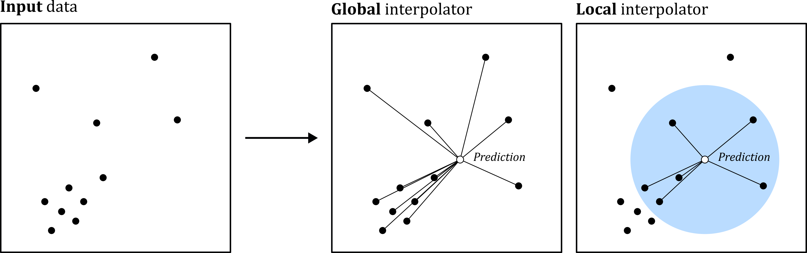
Finally, the outputs of spatial interpolation can be described as either exact or approximate. Exact methods will force the predicted values to match the observed values, whereas approximate methods can produce predicted values which differ from the observed values at the measurement locations.
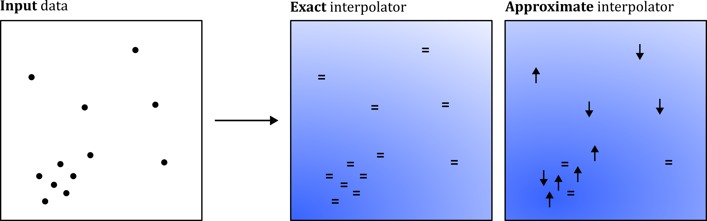
6.2.4 Deterministic interpolation: proximity
The simplest form of deterministic spatial interpolation is proximity or Thiessen interpolation, which assigns the value of the closest sampled location to unsampled locations.
A historic interpolation method, designed by Thiessen (1911) for meteorological data (rainfall), proximity interpolation involves the construction of a set of polygons around each sampling point, where all locations within the polygon are closer to the sampling point than any other point in the dataset63.
Use Create Thiessen Polygons, with “Output Fields” =
All Fields. Save the output with a suitable name e.g.,met_office_thiessenand then modify the Symbology to explore the result.
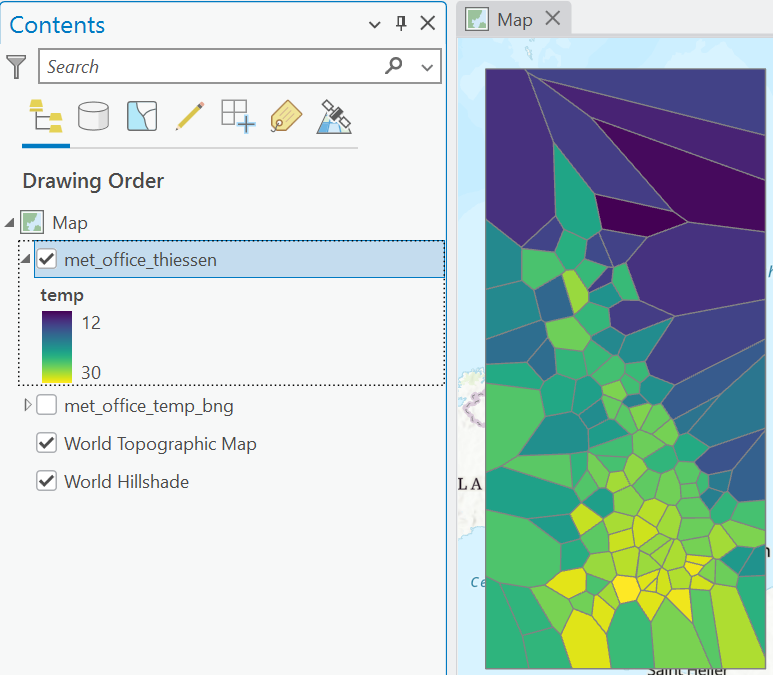
To what extent do you think is this a good representation of the “true” (unobserved) spatial variation in temperature?
Interpretation
I think you’ll agree that this is unlikely to be a good representation of the true variability in air temperature, given the abrupt changes in temperature at polygon boundaries. Our expectation is that air temperature would vary gradually with space.
To assess the quality of this output more rigorously, we could compare the “predicted” values with an independent set of air temperature values, held back from the original analysis. For example, this could be measurements from the Weather Observations Website (WOW), which allows anyone to contribute weather data from their own monitoring station, although sadly this has been recently retired.
6.2.5 Deterministic interpolation: IDW
A more commonly used deterministic interpolation method is Inverse Distance Weighting (IDW), in which the estimated value \(\hat{Z}_{j}\) at location \(j\) is a distance-weighted average of the observed values, defined as:
\[\hat{Z}_j=\frac{\sum_{i}z_{i}w_{i}}{\sum_{i}w_{i}}\]
where \(z_{i}\) is the observed value at location \(i\) and \(w_i\) is the corresponding weight, which can be calculated as:
\[w_{i}=\frac{1}{d_{i}^{p}}\]
Here \(d_{i}\) is the distance between locations \(i\) and \(j\), and \(p\) is the power coefficient, which determines how the influence of observations varies with distance i.e., as \(p\) increases, nearer observations are weighted more heavily, and vice versa.
For example, take the following distribution of observations and values:
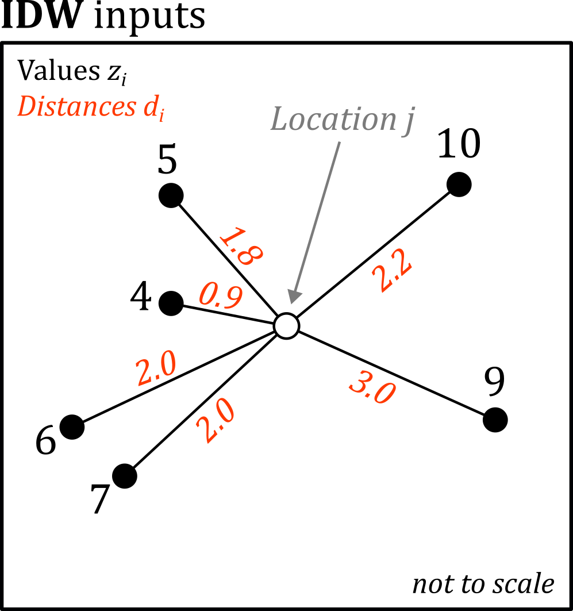
Here is a summary of the above observations, including the values \(z_i\) and the corresponding distances \(d_{i}\):
\[\begin{array}{cc} z_{i} & d_{i}\\ \hline 5 & 1.8\\ 10 & 2.2\\ 9 & 3.0\\ 7 & 2.0\\ 4 & 0.9\\ 6 & 2.0\\ \end{array}\]
A typical power coefficient might be \(p=2\), so we can calculate the weight \(w_i\) for each observation as:
\[\begin{array}{cc} w_{i}\\ \hline 0.31\\ 0.21\\ 0.11\\ 0.25\\ 1.23\\ 0.25\\ \end{array}\]
Using an IDW approach, the closest observation has the highest weight (\(z_i=4, w_i=1.23\)) and the furthest observation has the lowest weight (\(z_i=10, w=0.11\)). We can modify the influence of distance on the weights via \(p\), as shown below:
\[\begin{array}{cc} & w_{i} & & \\ p=1 & p=2 & p=4\\ \hline 0.56 & 0.31 & 0.10\\ 0.45 & 0.21 & 0.04\\ 0.33 & 0.11 & 0.01\\ 0.50 & 0.25 & 0.06\\ 1.11 & 1.23 & 1.52\\ 0.50 & 0.25 & 0.06\\ \end{array}\]
Continuing with \(p=2\), the numerator includes the weighted observations, while the denominator is based on the weights alone:
\[\begin{array}{cc} z_{i}w_{i} & w_{i}\\ \hline 1.54 & 0.31\\ 2.07 & 0.21\\ 1.00 & 0.11\\ 1.75 & 0.25\\ 4.94 & 1.23\\ 1.50 & 0.25\\ \end{array}\]
\[\begin{array}{cc} \sum_{i}z_{i}w_{i} & \sum_{i}w_{i}\\ \hline 12.80 & 2.36\\ \end{array}\]
The estimated value \(\hat{Z}_{j}\) at location \(j\) is therefore:
\[\hat{Z}_{j}=\frac{\sum_{i}z_{i}w_{i}}{\sum_{i}w_{i}}=\frac{12.80}{2.36}\approx5.42\]
To run IDW in ArcGIS:
Use the Geoprocessing tool IDW (Geostatistical Analyst Tools), with the Met Office monitoring stations as the “Input point features”, “Z value field” =
sl_temp, and “Power” \(p=2\). Use a suitable name for the “Output Raster”, but leave the “Output geostatistical layer” blank. For now, leave all other inputs as the default, including the Output cell size, Search Neighbourhood, Neighbour count, and Sector Type, as we’ll explore these in a moment.
IDW produces predictions within the the bounds of the input data, hence interpolation, rather than extrapolation.
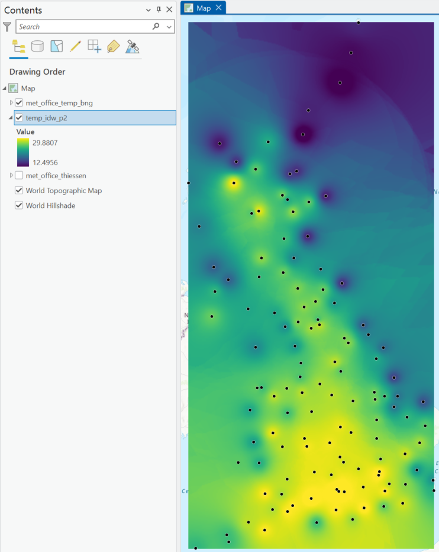
Does IDW produce the key spatial trends in temperature?
Are there are any regions where model performance varies?
The IDW tool used above has produced a static layer, and we could re-run the tool with different settings to explore their impact on the predicted surface (e.g., varying \(p\)). We can achieve this much more simply, however, via the Geostatistical Wizard. This workflow includes a range of deterministic and geostatistical interpolation methods and guides the user as they construct and evaluate the performance of an interpolation model.
As a result, while all of the interpolation methods can be run in a standalone tool, such as IDW or Empirical Bayesian Kriging, the Geostatistical Wizard can offer a more streamlined and dynamic experience.
Open the Geostatistical Wizard, which is available under Analysis → Workflows. Under “Deterministic Methods”, select “Inverse Distance Weighting” and choose the relevant “Source Dataset” and “Data Field” (
sl_temp). Leave “Weight Field” blank64 and then press Finish, which should export a default IDW output to the Map View.
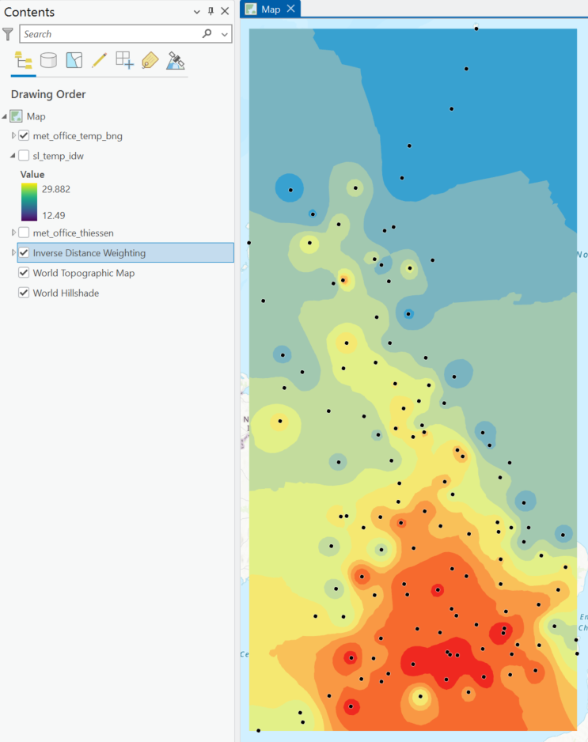
The Geostatistical Wizard output should be identical to the output of the standalone IDW tool, but this is difficult to assess, given the different layer symbologies and data formats (i.e., vector and raster).
Export Layer → To Rasters, using the default settings, and save to the project directory with a suitable name e.g.,
temp_idw_gw.
To apply the symbology of an existing layer:
Right click the layer in the Contents Pane with the symbology you want to apply → Sharing → Save as Layer File, saving to the project directory. To apply this to the IDW raster produced by the Geostatistical Wizard, navigate to Symbology → Import from Layer File.
Using this approach, there is a clear correspondence between the outputs, although the intensity of values seems to differ in places, when the same colour scale is used:
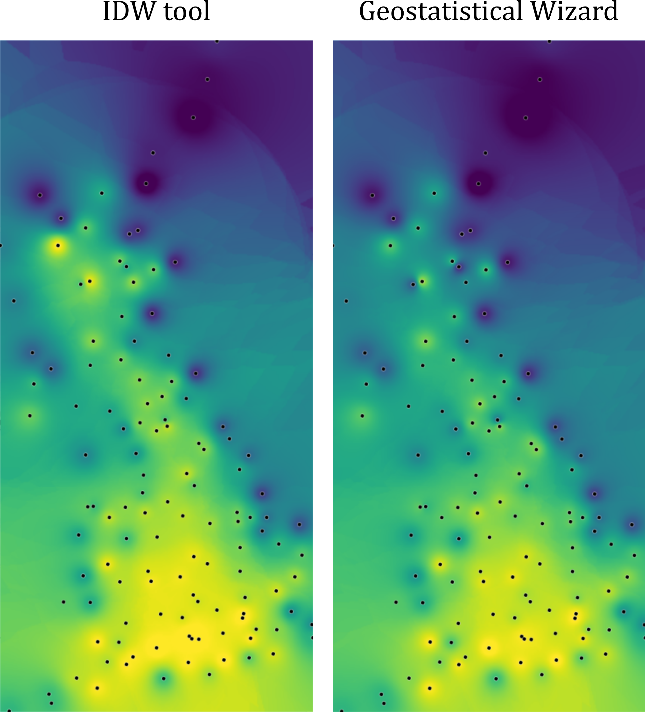
James can you reproduce the above plots, and the outputs below? The outputs of IDW and the Geostatistical Wizard don’t show systematic error (R2=0.99), but there are deviations for most points. Perhaps I’ve missing something in the tool setup, but intuitively we would expect the IDW to be the same “under the hood”.
A more rigorous approach to assess the degree of correspondence would be to generate a set of a random points within the modelled area, and compare the predicted values from both methods at those points.
Why can’t we just use the Met Office monitoring stations for this purpose?
Answer
IDW is an exact interpolator, so the predicted values from both methods should match the observed values at the monitoring station locations.
Use Minimum Bounding Geometry to create a bounding box for the Met Office monitoring stations (“Geometry Type” =
Envelope), and then use Create Random Points to create 100 random points within the output geometry.
When complete, use Extract Multi Values to Points to sample the IDW rasters at the random point locations, storing the values produced via the standalone IDW tool (
pred_idw) and those produced by the Geostatistical Wizard (pred_gw). Inspect the relationship between the predictions using Create Chart → Scatter Plot.
How would you assess the correspondence between the IDW and Geostatistical Wizard outputs?
To quantify this further:
Create a new field in the Attribute Table to summarise the difference e.g.,
abs(!pred_idw!-!pred_gw!).
What is the average and maximum absolute deviation between the methods?
Interpretation
Broadly, the two tools are returning similar values when the default settings are used, with no evidence of systematic error (R2 = 0.99). However, there are some minor to moderate differences between the predictions, which I am unable to account for!
Now that we know how to run IDW, we need to understand the key properties that influence the modelled surface, rather than simply accepting the defaults.
Open the Geostatistical Wizard, again selecting “Inverse Distance Weighting” under “Deterministic Methods”, and the correct “Source Dataset” and “Data Field” (
sl_temp). This time select next.
The following screen allows you to inspect the modelled IDW surface, and evaluate how this changes with different settings. You can:
Click on the map to identify the predicted value (for the current IDW configuration) at location \(j\).
Change point size for visibility and toggle “Show Source Dataset” to identify the points which are contributing to the predicted value at the current location \(\hat{Z}_{j}\), where the colour represents the weight (inverse distance).
Modify “Maximum Nieghbours”, which should then be reflected in the size of the “Source Dataset”.
The size of the source dataset is determined by the “Major and Minor Semiaxis” values, which govern the search neighbourhood around \(j\). For this dataset, the default value is ~330 km65.
With the default value, is this a global or local interpolator?
Change the “Sector Type”. The default = 1, which searches for \(n\) neighbours within a circle around each predicted location \(j\). This can be increased to four or eight sectors, and the search neighbourhood can be rotated using the “Angle” input.
Using different sector types can prevent directional bias i.e., if there is only sector, the \(n\) nearest points might be in one broad direction (e.g., north). Splitting into multiple sectors forces neighbors to come from different directions.
The power setting is our power coefficient \(p\), with a default of \(p=2\).
How does the modelled surface change across \(p=1-10\)?
What does the output resemble for \(p=100\)?
Answer
As we increase \(p\), the modelled surface increasingly resembles the output of proximity or Thiessen interpolation, due to the increasing weight allocated to the closest observation.
The power coefficient \(p\) can also be optimised via cross validation which we’ll discuss more fully in the next section.
When you are happy with your chosen settings, or you have returned to the default settings, click next.
6.2.5.1 Cross-validation of IDW
On the next tab in the Geostatistical Wizard, we are presented with predicted values, errors, and the distribution of the predicted values.
These are derived from leave-one-out-cross-validation, which involves removing a single point from the input dataset, re-running interpolation, and then evaluating the deviation of the predicted value from the input value at that location. This is repeated for all points in the input dataset.
This can be used to calculate root-mean-square error (RMSE), which is defined as:
\[\text{RMSE}=\sqrt{\sum_{i=1}^n(O_i-M_i)^2}\]
which is the square root of the sum of the squared differences between observed values (\(O_i\), input temperature) and modelled values (\(M_i\), interpolated temperature). This is the average distance between the model predictions and the observed values and is expressed in the units of the observed values (i.e., °C).
Interpret the RMSE value and the correspondence between observed and modelled values.
Inspect the pattern of error, with the measured values on \(x\) and the errors on \(y\).
Is the pattern systematic or random?
When complete:
Export your layer.
How different is your modified IDW output compared to the default settings?
6.2.6 Geostatistical interpolation: Ordinary Kriging
One disadvantage of IDW and other deterministic approaches is that there is no explicit consideration of the spatial structure of the data, while predictions are made based on pre-determined mathematical rules (e.g., \(w_{i}=\frac{1}{d_{i}^{p}}\)), independent of the actual spatial dependence between observations. In contrast, geostatistical approaches incorporate the spatial dependence of the observations (also known as variography) to develop a model of the underlying (unobserved) spatial process. This typically results in more accurate predictions, and importantly, allows for quantification of uncertainty.
Kriging, developed and popularised by Krige (1951b) and Matheron (1963b), is synonymous with the field of geostatistics, and comes in many variants, including Ordinary, Universal, Co-kriging, Indicator, and Empirical Bayesian, some of which we’ll use today. Understanding how these work, and selecting the appropriate version for your data and analysis, is therefore critical.
6.2.6.1 Variogram construction
One of the key components of all forms of Kriging is the variogram, which represents the differences between data points at specific distances i.e., the similarity of data points \(y\) with increasing distance \(x\). This is used to model spatial dependence, which is the key distinction between deterministic and geostatistical approaches to interpolation. Rather than introducing a schematic of a variogram here66, we’ll begin by exploring how variograms are defined and constructed. While there isn’t a standalone tool to produce a variogram in ArcGIS, we can produce one manually with a bit of data wrangling, and this is useful to develop your understanding.
Use Generate Near Table, using the monitoring station data as both “Input Features” and “Near Features”, and unchecking “Find only closest feature”. This will return the distances between all pairs of observations (
NEAR_DIST).
Why is “Method” = Planar suitable here?
Answer
As we are using a suitable projected CRS for our area of interest (EPSG 27700), errors in distance calculations will be very small, compared to an ellipsoidal (geodesic) approach.
Next use Join Field to modify the Attribute Table of the Near Table, joining temperature values for the origins (
IN_FID) and destinations (NEAR_FID) using “Field Mapping”:
- “Input Field” =
IN_FID, “Join Field” =FID, renamesl_temptoorig_temp- “Input Field” =
NEAR_FID, “Join Field” =FID, renamesl_temptodest_temp
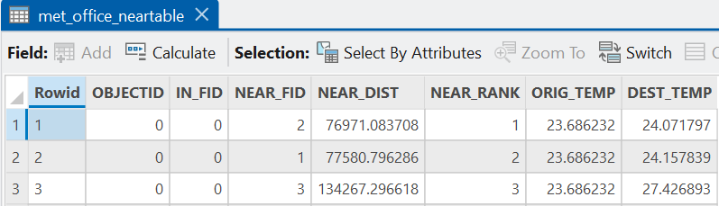
With the distances between observations included in the Attribute Table (NEAR_DIST), as well as the origin-destination temperatures (orig_temp, dest_temp), we can calculate the semivariance (\(γ\)) for each pair following Matheron (1963b) as follows:
\[γ=\frac{(z_2-z_1)^2}{2}\]
where \(z_{1}\) and \(z_{2}\) are the observed temperature values for each pair of observations. The semivariance is simply half the squared difference between the observed values.
Using Calculate Field, devise your own expression to create a
gammafield (“Field Type” =Double) representing the semivariance \(γ\).
Expression
Here is an expression: ((!orig_temp!-!dest_temp!)**2)/2 or pow(!orig_temp!-!dest_temp!, 2)/2
If successful, we now have all the information we need to start building our variogram. The first step in this process is the creation of the variogram cloud, which represents the empirical (observed) relationship between distance and semivariance for all pairs of observations, and is the basis for subsequent geostatistical modelling, see Ploner (1999).
To create a variogram cloud, use Create Chart → Scatter Plot, with
NEAR_DISTon \(x\) andgammaon \(y\).
Your output should resemble the following:
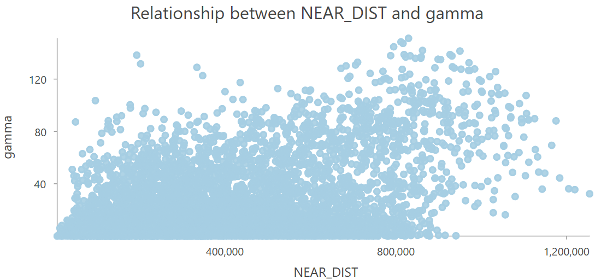
This is large and very noisy dataset, containing around ~16,000 point pairs67, so a typical next step is to simplify the dataset, which is achieved by binning the paired observations into intervals, referred to as lags, and calculating summary statistics for each lag.
As above, this can be calculated for us via the Geostatistical Wizard, but we can also achieve this manually:
In the Attribute Table for the Near Table, use Calculate Field to create a new field (
lag, “Field Type” =Long 32-bit integer), using the following expression:int(!NEAR_DIST! // 25000), which sorts our measured distances into lags of 25 km i.e., distances of 0 - 25 km are lag \(0\), 25 - 50 km are lag \(1\), and so on.
When complete:
Use Summary Statistics on the Near Table, calculating the mean of the semivariance values (
gamma), usinglagas the case field.
The output of this tool can be visualised using Create Chart → Scatter Plot, which reveals how the average semivariance between points changes with distance. We would refer to this as the sample variogram68.
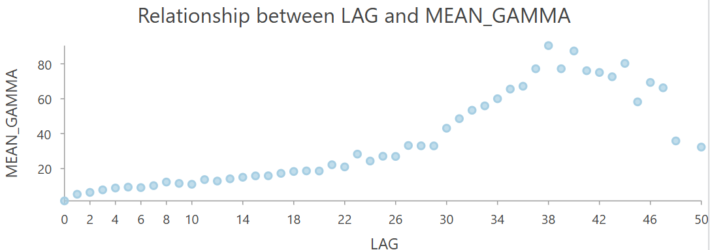
You should now have an understanding of the variogram cloud (i.e., empirical data showing distances and semivariances for each point pair) and the sample variogram (i.e., simplification of the empirical data into bins or lags).
To clarify, the manual approach we’ve taken here has been used for illustrative purposes, and hopefully you should now have a better understanding of the data that underpin the later modelling. In future, you should use the Geostatistical Wizard, the standalone tools, or other implementations, which give you greater control over the data and model choices e.g., our selection of a 25 km lag size is somewhat arbitrary!
Variogram modelling
The next step in the geostatistical workflow is to produce a variogram model which describes the trends in the sample variogram. This is a mathematical representation of the observed spatial dependence in the dataset.
These models are fitted to the sample variogram, with a schematic example here:
Some of this should be very familiar to you. Our sample variogram is present as the observed points, which represents the average semivariance \(y\) for each lag \(x\), which we calculated using Summary Statistics. A variogram model has then been fitted to the observed points (“empirical” black line). This model typically has the following components:
-
Range: the distance \(x\) at which spatial dependence between observations is no longer detected (\(\approx25 \: \text{km}\)). Observations within this range would be considered spatially autocorrelated.
- Sill: the corresponding semivariance on the \(y\) axis for the detected range. This represents the typical degree of dissimilarity (increasing \(y\)) for observations that are greater than the range apart.
- Nugget: the height of the jump of the variogram model at the origin (\(x=0\)). Theoretically, as the distance between observations shrinks to 0, the semivariance should also equal 0. However, many fitted variogram models exhibit a discontinuity at the origin, with \(γ>0\). This is typically attributed to measurement error and/or spatial variation on a scale smaller than the smallest distance between any two points (Diggle and Ribeiro, 2007).
There are lots of Kriging variants we can use to develop the variogram model. Here we will use Ordinary Kriging, which assumes the data has a constant but unknown mean (i.e., stationarity).
Open the Geostatistical Wizard → “Kriging / CoKriging”, using
sl_tempas the “Data Field” for “Input Dataset 1”, and press next.
For each Kriging method, we can generate a range of outputs, including:
- Prediction i.e., the interpolated values (default)
- Standard Error i.e., errors associated with those interpolated values (standard deviation)
- Probability i.e., the probability that the interpolated value will be above or below a predefined threshold (e.g., a pollutant level relative to a legal limit)
- Quantile i.e., a prediction layer for the specified quantile (e.g., 10th, 95th)
Select “Ordinary Kriging” and “Prediction”, leaving “Transformation type” and other settings as
None, and press next.
You will be presented with a lot of information and a great many options on the Semivariogram/Covariance Modelling tab, so we’ll explore this slowly:
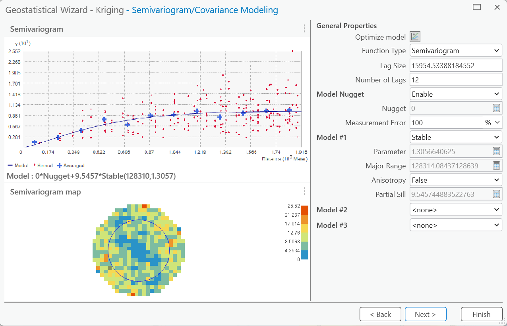
The sample variogram and an initial variogram model are here, although using different settings for the lag size to those we selected earlier.
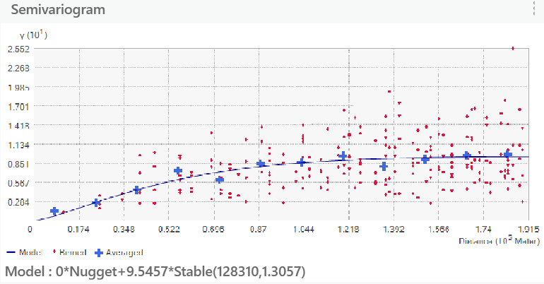
Our objective is to produce a variogram model (blue line) which achieves the best match with the sample variogram (blue crosses). As a reminder, the sample variogram is built on the variogram cloud (red points, binned). As summarised in the documentation, our model should:
- Pass through the center of the cloud of binned values (red dots).
- Pass as closely as possible to the averaged values (blue crosses).
The initial model produced by the Geostatistical Wizard is defined mathematically as follows:
\[0*\text{Nugget}+9.5457*\text{Stable}(128310,1.3057)\]
where \(\text{nugget}=0\), \(\text{sill}=9.5457\) and \(\text{range}=128,310\). The model type (which we’ll discuss momentarily) is referred to by esri as “Stable”, which has a smoothing parameter, in this case of \(1.3057\).
This model describes how semivariance changes with distance. This information is then used to calculate how observations and their values \(i\) should be weighted when predicting at an unsampled location \(j\). For example, let’s say the distance between \(j\) and \(i\) is \(100\:\text{km}\). If we plug the value of \(100\:\text{km}\) into the model above, we can predict the semivariance, which in turn, is used to produce weights for each observation69. In turn, the Kriging approach shares components with IDW, and is defined as follows:
\[\hat{Z}_j=\sum_{i=1}^n\lambda_i Z_i\]
Both methods predict values at an unsampled location (\(\hat{Z}_j\)), taking into account the weighted values at the sampled locations \(Z_i\). However, while IDW uses pre-determined rules to calculate the weights for each observation70, Kriging calculates weights \(\lambda_i\) for each observation based on the observed spatial dependence, which is represented by our model above. Importantly, weights are not calculated independently for each observation (as with IDW), but are calculated simultaneously for all the observations that contribute to the prediction \(\hat{Z}_j\). The advantage of this is that Kriging can reduce the weights for nearby and spatially dependent observations, ensuring they are not “double counted” when predicting, as illustrated below:
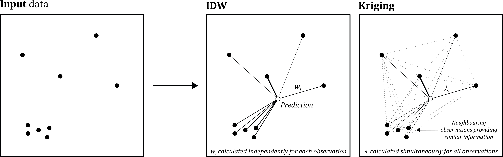
Before we apply our “Stable” model, we need to understand how it was developed and more broadly, variogram calibration.
6.2.6.2 Variogram calibration
The variogram model is sensitive to the specification of the sample variogram and the properties of the model itself. There are 11 model options available to the user (i.e., Stable, Gaussian, Circular, Exponential, …), and there is flexibility to modify the lag size (measured in the units of the CRS, m) and the number of lags, among other properties. Correct specification of the sample variogram and model is important. For example, if the selected lag size is too large, then short-range autocorrelation may be masked.
Keep a note of the current lag size (\(15954.53388184552\)) and number of lags (\(12\)), and then update the “Lag Size” value to 25,000 m, which is the lag value we selected earlier. If you increase the “Number of Lags”, this should begin to resemble the sample variogram we created earlier. When you’re happy you understand this, return to the default lag size and number.
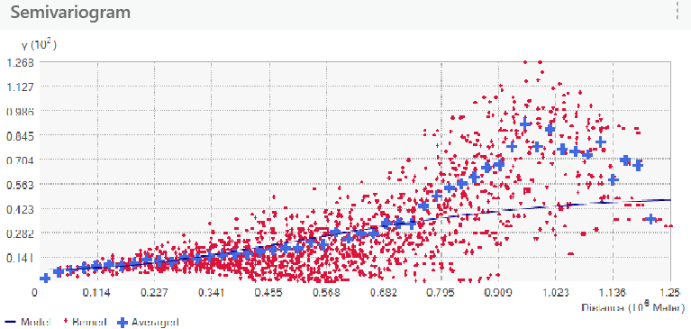
There are various techniques that can be used for selecting the lag size and the number of lags. For example, a starting point might be the average distance between each point and their nearest neighbour, as outlined in the documentation.
Use Average Nearest Neighbour to calculate this.
A rule-of-thumb for the number of lags is half of the largest distance between any two points, divided by the lag size.
Another approach is to use cross-validation i.e., for a given model type (i.e., Stable, Gaussian, Circular, Exponential, …), adjust the lag size and the sample variogram parameters (nugget, sill, range) and then assess performance via cross-validation, returning the combination with the lowest RMSE. Some of the ArcGIS model types are described here. A better visualisation of model types is from the R gstat package, although not all are available in ArcGIS:
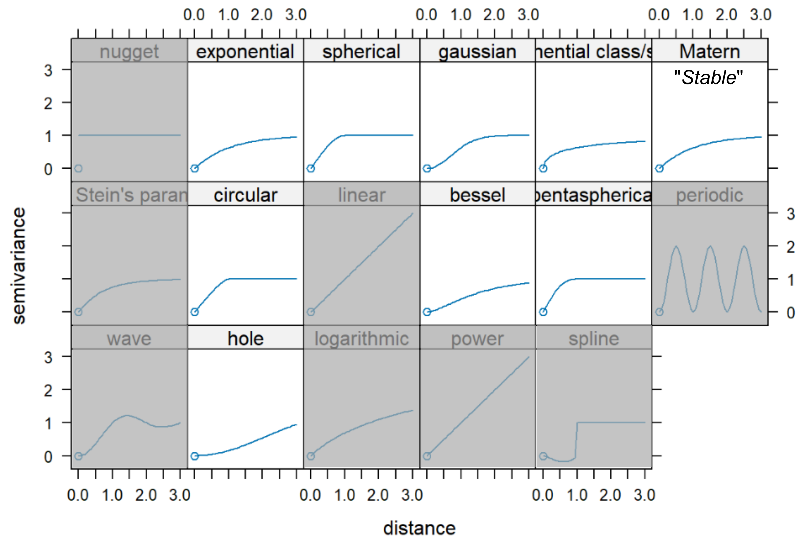
Using the
Stablemodel, selectOptimize modelto perform cross-validation.
What is the lag size?
Answer
The lag size is \(\approx32.6\:\text{km}\), which is a good approximation of the output of Average Nearest Neighbour.
Is this a good fit to the sample variogram?
Answer
In a word, yes. While we do not have to any quantitative measures of fit, visually the model fits our earlier criteria, passing through the variogram cloud and passing close to the sample variogram.
What is the “Major range”? What does this mean?
Answer
The range (\(\approx260\:\text{km}\)) is the distance at which spatial dependence between observations is no longer detected.
Evaluate the other model types, assessing the fit between the variogram model and the sample variogram.
Which model types are candidates and which show a poor fit to the sample variogram?
Interpretation
Based on my testing, there are some models which aren’t worth considering further (e.g., Exponential, Rational Quadratic), as these exhibit a poor fit between the variogram model and the sample variogram, even when cross-validation has been used. By comparison, there are others which show promise (Stable, Gaussian, K-Bessel). Of these, both Stable and
K-Bessel return a lag size similar to our previous rule-of-thumb using Average Nearest Neighbour.
We’ll select the former (Stable), which is known as the Matérn model elsewhere, and which has produced the following model following cross-validation:
\[2.2216*\text{Nugget}+10.762*\text{Stable}(261220,1.3479)\]
The smoothness parameter in the Matérn model (\(1.3479\)) can change the shape of the function to resemble either an exponential and Gaussian shape, or something in between. The documentation for the Python package gstat provides a useful description and visualisation of this.
For the selected model parameters, you also have access to the semivariogram map, which is a visual representation of how semivariance changes with both distance and direction:
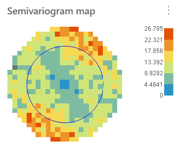
This provides information on spatial dependence, where the colours denote the average semivariance (dissimilarity) for that distance and direction. The spatial pattern can either be isotropic (same in all directions), as represented by a circular or symmetrical distribution, or anistropic (varying with direction), as represented by an elliptical or stretched distribution.
Within the model range71, which is denoted by the circle, there is some evidence of anistropy, although this is more noticeable at greater distances, with the greatest semivariance in the north-south direction, and reduced semivariance in the east-west direction. This is a reflection of the phenonemon we are studying: temperature. Monitoring stations which share the same longitude are relatively similar, even if separated by greater distances (e.g., west coast vs. east coast), whereas those which share the same latitude are highly dissimilar (e.g., south coast vs. north coast).
While we can edit the model parameters manually (e.g., lag size, nugget, sill, range, anistropy), or use a combination of models to represent complex behaviour, it is very challenging to finalise the settings without some form of cross-validation.
Press next to continue with the “Stable” model, and inspect the resulting interpolated surface.
The following tab should be familiar following our earlier exploration of Inverse Distance Weighting.
Explore the effects of changing the number of neighbours and sector type.
Does this have a significant effect on the interpolated surface?
Interpretation
The weights for each observation are a product of the variogram model, as described above. If the model is well fitted, nearby points are weighted most heavily, so including additional distant, and therefore minimally-weighted, points has little impact.
Inspect the weights produced by Kriging.
How are these different to IDW?
Answer
You will have noticed that many of the weights are negative. This represents spatial redundancy. This occurs where there is spatial dependence between neighbouring observations, which are therefore providing similar information, or where an individual observation is being “screened” by those nearer to the prediction location.
6.2.6.3 Variogram evaluation
The final stage of our Ordinary Kriging analysis is to evaluate the quality of the interpolated surface, which as with IDW, is computed via leave-one-out cross-validation (LOOCV). The “Table” (shown below) includes both Measured and Predicted values. Importantly, Ordinary Kriging is an exact interpolator, so the predicted values in the output surface should match the observed values at the monitoring station locations.
Instead, the Predicted values in the table are those produced during LOOCV, when that observation has been removed from the analysis.
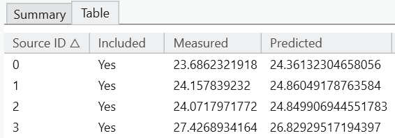
Evaluate the model performance using the summary statistics and plots.
The Geostatistical Wizard includes a range of metrics for evaluation. For simplicity, we could prioritise:
- A mean error close to 0, indicating removal of bias. This is a simple arithmetic mean of the residuals, so the mean error can reveal if the model is systematically underpredicting or overpredicting.
- A RSME as small as possible, reflecting the average distance between the model predictions and the observed values. To reiterate the discussion point above, these are the predictions produced via LOOCV.
- A standardised RMSE close to 1, which is the RMSE of the standardised errors, which is a measure of whether the estimated standard errors (produced during LOOCV) are an accurate reflection of the actual prediction errors.
How has RMSE changed?
Additional metrics and plots are provided for Ordinary Kriging, including QQ plots, which are good way of visualising whether data follow a specific theoretical distribution (e.g., a normal distribution). While it is not within the scope of this unit to interrogate these in detail, the 1:1 line represents the theoretical distribution, while the points (the dataset) represent the actual distribution of the data. If these converge, it suggests that the data match that distribution. Any significant deviations suggests otherwise! See this post on Stack Exchange for a good explanation.
Finish the Geostatistical Wizard, and then export the output layer to raster.
How does the Ordinary Kriging interpolation compare to the output of IDW?
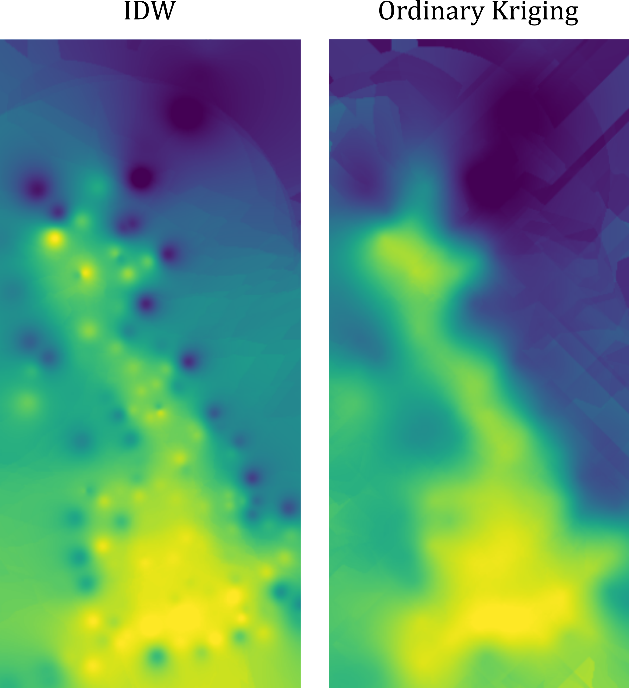
6.2.7 Geostatistical interpolation: Universal Kriging
In the introduction above, we noted that Ordinary Kriging assumes stationarity i.e., the data has a constant, but unknown mean. You might have questioned this assumption, in the context of our dataset.
Do we expect there to be a constant (unknown) mean temperature across the British Isles, for the measured datetime?
Answer
No! Our automatic monitoring stations span approximately 10 degrees of latitude, from as far south as the Isles of Scilly to as far north as Lerwick on the Shetland Islands. It is highly likely that the mean temperature will vary across this area, so our assumption of a stationarity and a constant mean is not easily defensible. Perhaps this is why our model performance (RMSE) is only slightly improved compared to IDW?
Rather than use Ordinary Kriging, we could use a method that assumes the data mean is not constant, but varies gradually across space according to a mathematical function (non-stationarity). We should use this approach whenever we expect non-stationarity i.e., trends in climate, elevation… This is known as University Kriging.
This method begins by substracting a structural trend from the original measured points (e.g., temperature changing with latitude), before a variogram model is fitted to the remaining random errors72. Predictions are computed from the variogram model, which is used to define spatial dependence and estimate observations weights, and the original structural trend, which is added back in. As per the documentation “Universal kriging should only be used when you know there is a trend in your data and you can give a scientific justification to describe it.” In our case, both requirements are met.
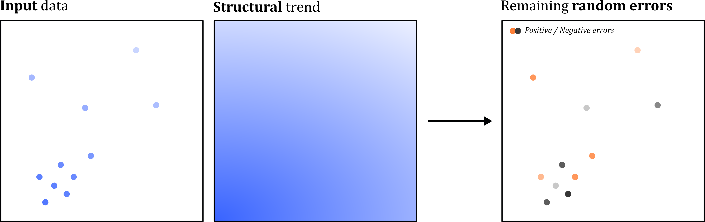
Re-open the Geostatistical Wizard, select “Kriging / CoKriging” with
sl_tempas the “Data Field”, and then “Universal Kriging” and “Prediction”.
We need to now think carefully about the “Order of Trend Removal”:
- Constant: removes a constant value, which is not valid given our assumption of non-stationarity.
- First: removes a linear gradient e.g., temperature decreasing from south to north.
- Second: removes a quadratic surface (curved gradients)
- Third: removes a cubic polynomial.
With model parsimony in mind, a first order polynomial is the most appropriate choice here, as we have a clear scientific justification for a linear gradient i.e., temperature decreasing with latitude. There is scope to explore a second order polynomial, which might do a better job of incorporating gradients related to longitude e.g., proximity to the North Atlantic, or distance to the coastline.
Explore the default settings for first, second and third order trend removal. When you’re happy with your understanding, select First order and next.
On the following tab, we can control the construction of the polynomial, and a key parameter is “Exploratory Trend Surface Analysis” which can range from 0 - 100. When 0, the trend is a global polynomial interpolation i.e., a single smooth function applied to the entire dataset. Values greater than 0 represent local polynomial interpolation, where increasing values equate to more local interpolation.
Explore how changing the “Exploratory Trend Surface Analysis” influences the underlying trend surface, and how this affects the number of contributing points.
It is important to recognise that this stage of the analysis is a form of deterministic interpolation, and can be run independently using Trend (Spatial Analyst Tools) or via Local Polynomial Interpolation in the Geostatistical Wizard.
In my view, and again with model parsimony in mind, the simplest form of trend removal is the most appropriate choice i.e., global polynomial interpolation (Exploratory Trend Surface Analysis = 0). While a local polynomial may produce a better fit, there is a danger of overfitting and a risk that we remove the spatial structure that Kriging is designed to capture.
Continue with global polynomial interpolation, Exploratory Trend Surface Analysis = 0.
As with Ordinary Kriging, our next step is to define and calibrate our model variogram. However, it is important to remember that the Ordinary Kriging semivariance values \(y\) were based on the observed values, whereas here, the semivariance is calculated is based on the values after the trend surface has been removed.
Explore the variogram model settings. When you are happy with your understanding, I would recommend optimising the
Stablemodel again, for consistency with our Oridinary Kriging approach.
When complete:
Explore the final tabs to evaluate model performance.
How has RMSE changed? Is the model improved compared to Ordinary Kriging?
Answer
Overall, we can say that Universal Kriging has slightly outperformed Ordinary Kriging, although not significantly. This may be because the latter was already capturing much of the latitudinal gradient through spatial autocorrelation.
However, we have a strong theoretical justification to use Universal rather Ordinary Kriging, independent of the difference in performance.
6.2.8 Summary
In this practical we have introduced a range of interpolation methods, including proximity, inverse distance weighting, and Ordinary and Universal Kriging.
What is your overall appraisal of their performance?
What are the strengths and limitations of the various models?
Suggestion
A few suggestions, by no-means exhaustive:
- Proximity: A computationally efficient approach but which is probably a poor representation of continuous phenemona which change gradually through space.
- Inverse distance weighting: No consideration of spatial dependence and sensitive to \(p\).
- Ordinary Kriging: Sensitive to mis-specification of the variogram model, directly affecting the interpolation weights.
- Universal Kriging: As above, but also sensitive to the specification and removal of the structural trend.
To summarise, we have introduced some important deterministic and geostatistical interpolation methods, capturing some of the key choices involved and the sensitivity of the interpolated surface to those choices. As you will know from your exploration of the Geostatistical Wizard, we have only really scratched the surface, with lots of Kriging variants developed for different situations and data types, alongside a suite of alternative methods.
When selecting an interpolation method, we need to think carefully about theory as well as model performance, see Heusler et al. (2025), Rufino et al. (2021) and Li and Heap (2011) for some targeted reading.
…and with that, congratulations! You have completed the practical and should now have a strong understanding of interpolation, the geostatistical perspective, and key methods.
6.3 Extra
As an exact interpolator, Universal Kriging has reproduced the temperature values at our input monitoring stations. Via cross-validation, we know that prediction accuracy at unsampled locations is lower (\(\approx2\:\text{°C}\)). What might be causing this?
A good way to understand the error is to simply plot the residuals. This can be achieved by exporting the cross-validation table (Save Table to Feature Class) and symbolising using the Error field.
Is there any obvious pattern to the residuals?
Is there any pattern to absolute error? Use Calculate Field, abs(!Error!) with “Field Type” = Double.
Answer
In general, there appears to be evidence of reduced performance in parts of Scotland, and at higher latitudes (\(y\)), as shown here:
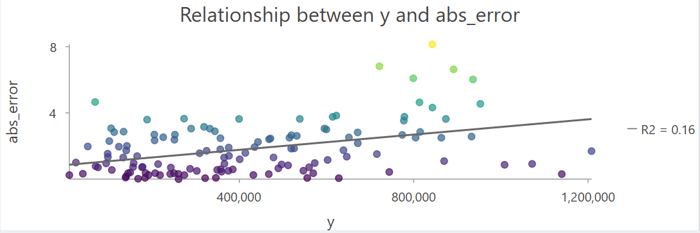
This is perhaps unsurprising as there are some stark and difficult to explain differences between the reported temperatures e.g., Bealach Na Ba at 29.1°C (FID = 93) and
Aultbea at 15.9°C (FID = 94).
Is there evidence of spatial autocorrelation? What weights method did you choose?
Answer
There is statistically significant clustering (\(I>0\)) of the absolute errors, with local positive spatial autocorrelation in parts of Scotland and England, as identified by local Moran’s \(I_{i}\).
If you assess the spatial autocorrelation of the actual model residuals (Error), you may see evidence of negative spatial autocorrelation i.e., dispersion. This could arise due to smoothing which is inherent to Kriging predictions, particularly during cross-validation. This is best understood by considering one-dimensional Kriging, which is illustrated below. Unlike the Kriging variants we focused on, which interpolate in two-dimensions \(x,y\), 1D Kriging can be used for interpolation within a vector of values e.g., a time-series:
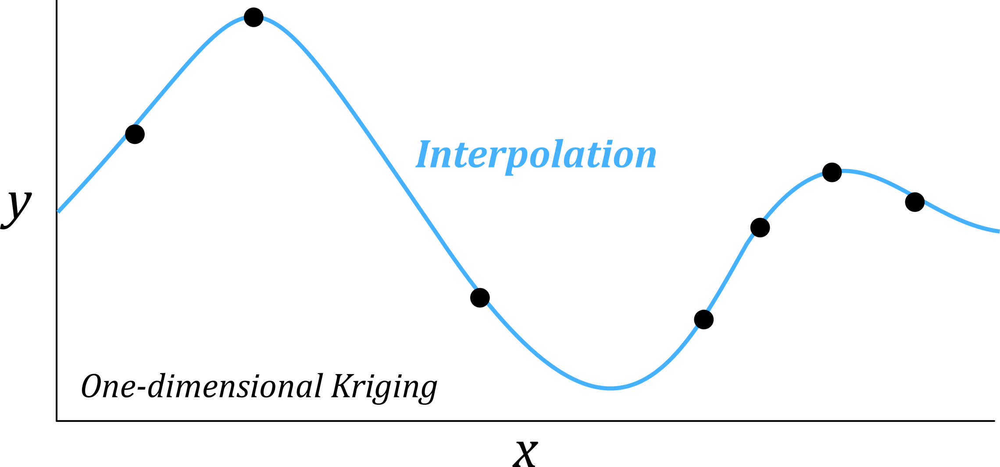
During LOOCV, each value is removed from the model and its value predicted using the remaining observations. As Kriging predictions are smoothed towards neighbouring values, this could produce a a pattern in which neighbouring points are alternately under- and overpredicted:
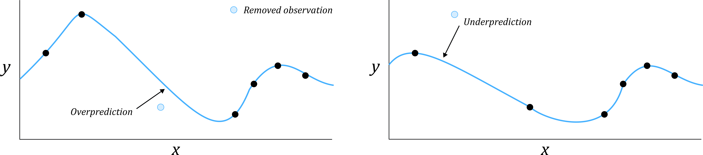
If you’re interested in exploring geostatistics further, the R package gstat and the Python package SciKit-Gstat are excellent resources, as are the geostatistical walthroughs from Paula Moraga and Edzer Pebesma and Roger Bivand.
6.4 Resources
- Krige, D.G. (1951) A statistical approach to some basic mine valuation problems on the Witwatersrand. J Chem Metal Min Soc S Afr, December, 119–139
- Matheron, G. (1963b) Principles of geostatistics. Econ Geol 58(8):1246–1266
- Oliver, M.A. and Webster, R. (1990). Kriging: a method of interpolation for geographical information systems. International Journal of Geographical Information System, 4(3), pp.313-332.
- Diggle, P.J., Tawn, J.A. and Moyeed, R.A. (1998). Model-based geostatistics. Journal of the Royal Statistical Society Series C: Applied Statistics, 47(3), pp.299-350.
- Rufino, M.M., Albouy, C. and Brind’Amour, A. (2021). Which spatial interpolators I should use? A case study applying to marine species. Ecological Modelling[MT3.1], 449, p.109501.